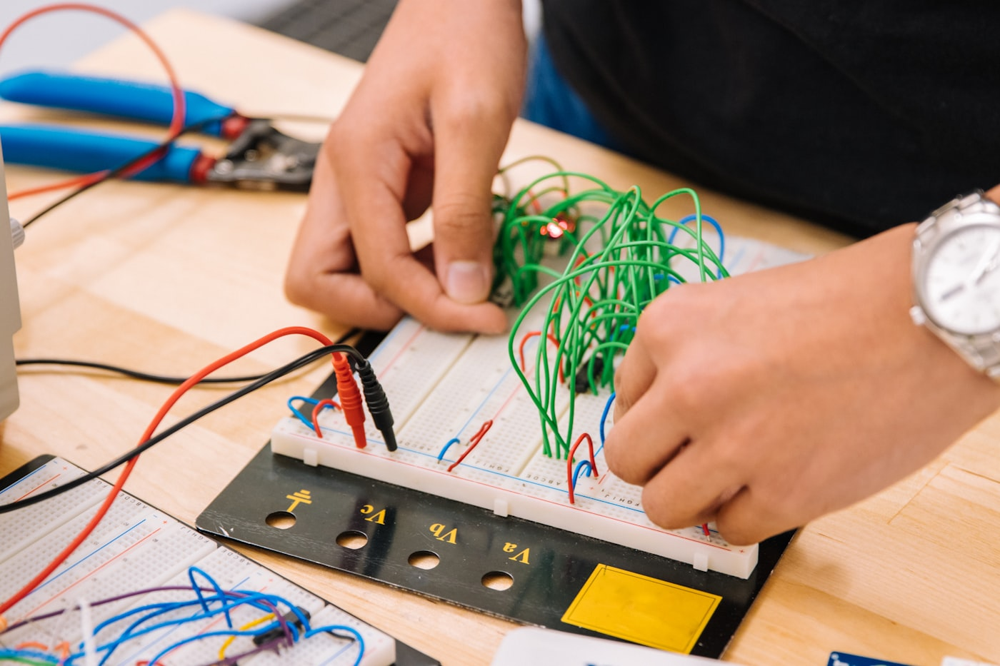
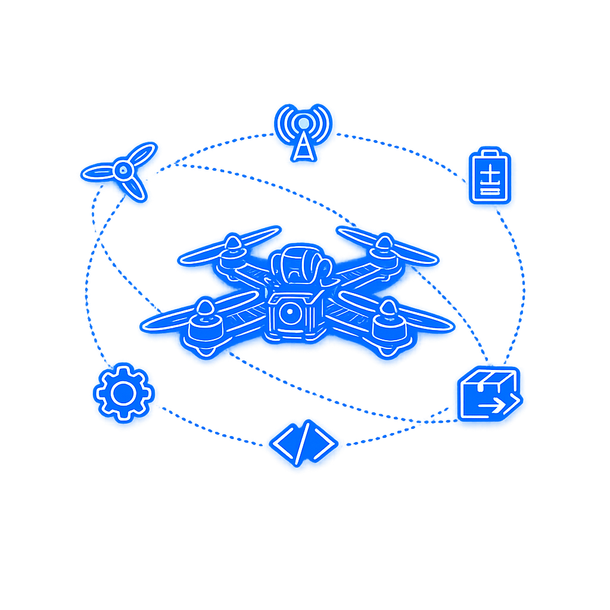

Збери дрон. Підніми в небо. Це твоя наука.
Тут ти не граєш у пілота — ти стаєш інженером. Паяєш плату, пишеш код, налаштовуєш радіо і запускаєш машину, яку зібрав власними руками. Пілотування — це лише фінал. Решта — справжня фізика, електроніка й командна робота.
Пілотування — це лише верхівка айсберга
Джойстик — це найпростіше. Усе цікаве сховано під поверхнею: те, як машина взагалі тримається в повітрі. Саме там ти й працюєш.
- 01Над водою — пілотування: фінальні 5–10%, які стають можливими завдяки всьому іншому.
- 02Під водою — інженерія й паяння: читаєш схему, з'єднуєш мотори, регулятори, контролер.
- 03Фізика та хімія: тяга, вага, центр мас, аеродинаміка — і Li-Po, з якого треба видобути максимум безпечно.
- 04Радіозв'язок: частоти, канали, відеолінк — як сигнал доходить і чому іноді ні.
Ці навички працюють далеко за межами польоту — у робототехніці, інженерії, IT.

Руки на платі з першого дняНе презентація. Твоя машина — до останнього дроту.
Забудь про нудну теорію на годину. Коротко пояснюємо принцип — і одразу береш у руки інструмент. За курс ти збереш FPV-дрон з нуля: розпаяєш контролер, з'єднаєш мотори й регулятори, налаштуєш політний контролер і прив'яжеш апаратуру керування.
Потренуєшся на симуляторі, де розбити дрон не страшно, а потім вийдеш у реальний політ із тим апаратом, що зібрав сам. Це не іграшка з коробки — це твоя машина, яку ти розумієш повністю.
Дрон — це шість наук в одному корпусі
Поки одні думають, що дрон — це джойстик, ти розбираєшся в тому, як він тримається в повітрі. Навколо одного польоту обертається ціла фізика, код, радіо й хімія.

Симулятор, потім реальне небо — фінальні 5–10%, що стають можливими завдяки всьому іншому.
Від «страшно й незрозуміло» — до «я це зібрав»
Дрон — це магія в коробці
Незрозуміло, як воно літає. Розбити страшно, полагодити нічим. Залишається лише дивитися чужі відео й гадати, що там усередині.
Машина, яку ти розумієш
Ти знаєш, куди йде струм, чому гріється регулятор і як налаштувати політ. На симуляторі вже не страшно — а потім піднімаєш у небо свій апарат.
Від першого паяння — до власного польоту
На кожному занятті є теорія, показ і робота руками — щоб не ставало нудно. Вісім кроків, і дрон у небі — твій.
Знайомство й сенс
Що таке безпілотні системи й навіщо їх розуміти. Класи дронів, безпека.
Електроніка
Читаємо схему, беремо паяльник. Куди йде струм і чому щось гріється.
Мотори й рама
Збираємо каркас, ставимо мотори та регулятори, балансуємо.
Політний контролер
Прошивка, режими польоту, перші налаштування на стенді.
Радіо й відеолінк
Частоти, канали, прив'язка апаратури. Як сигнал доходить.
Живлення й Li-Po
Хімія акумулятора: як видобути максимум заряду й не вбити батарею.
Симулятор
Перші польоти там, де розбити дрон не страшно. Відпрацьовуємо рефлекси.
Реальний політ
Виходимо в небо з апаратом, який ти зібрав сам. Це фінал.
Команда: інженер, пілот, збирач. Знайди своє.
Класний дрон не збирає одна людина — це робота екіпажу. На курсі ти пробуєш різні ролі й знаходиш ту, де ти найсильніший.
Інженер
Ведеш електроніку: паяєш з'єднання, прошиваєш контролер, шукаєш, де коротить. Твоя стихія — схема й код.
Пілот
Доводиш політ: відпрацьовуєш на симуляторі, налаштовуєш режими, виводиш машину в реальне небо впевнено.
Збирач
Тримаєш збірку: рама, мотори, баланс, чистий монтаж. Усе має сидіти міцно й летіти рівно — це на тобі.
Поруч — наставники, які реально літали й паяли: ветерани, інженери, педагоги. Вони працюють пліч-о-пліч, а не читають лекцій згори. Половина групи — діти військових, половина — цивільних. Тут ти знаходиш своїх.
Ти не просто запускаєш дрон. Ти доводиш собі, що можеш зібрати складне з нуля — і воно полетить.
Базовий курс — 8 занять, вік 13–17, безкоштовно на громадських засадах. Місць у групі обмежено: формат руками вимагає, щоб наставник дійшов до кожного. Залишай заявку — і починаємо.